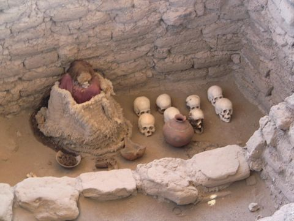

السفر جنوباً: صور وقصص
في عام 2011 قمت بتصوير الهياكل الحجرية في بيرو وبوليفيا. في عام 2014، سجلت كاميرتي جمجمات في المتاحف البيروفية، وفي إحدى الصور أحمل جمجمة تسمى المجموعة بـ "ستارشيلد 2". في فبراير 2024 صورت رؤوس الحجارة من فترة امرنا في القاهرة هذه الصور تعطي هذا الموقع سؤاله: ماذا سجلت كاميرتي، ماذا يمكن للبحث أن يخبرنا عنه، وما نوع العالم الذي تذكره الأشكال؟
(ستارشيلد 2) هو الاسم الذي أعطته المجموعة إنها مستعارة من جمجمة أخرى، معروفة من المكسيك، والتي جلبها لويد باي إلى انتباه الجمهور. هذا المعرض يبقي الجمجمتين منفصلتين
جدول زمني
- أغسطس 2011 الرحلة من ساحل نازكا إلى مسطح الأملاح الأيوني: 15 وجهة، صور ومقاطع فيديو.
- 30 أكتوبر – 1 نوفمبر 2014 صور جمجمة ومقاطع فيديو متحف في بيرو.
- 15 فبراير 2024 رؤوس حجرية من فترة امرنا في المتحف المصري في القاهرة
- 2026 تنظيم المواد، التحقق من المصادر والرسوم التوضيحية الذكية للمدينة الحجرية.
ثلاث مسارات


ما توصلت إليه الأبحاث
- خطوط نازكا وجدت دراسة نشرت في عام 2024 303 رقمًا جديدًا بالإضافة إلى 430 المعروفة من قبل. (Sakai وآخرون 2024)
- ماشو بيكشو وفقًا لتواريخ الكربون الإشعاعي ، كان الموقع قيد الاستخدام بحلول عام 1420 ، قبل ما استنتج من السجلات. (Burger وآخرون 2021)
- (باما بونكو) بدأ البناء حوالي عام 580 م وانتهى حوالي عام 710 م، قبل قرون من الإنكاس. (Marsh وآخرون 2023)
- باراكاس من بين 159 شخصاً تمت دراستهم من مقابر "سيرو كولورادو" 98 في المئة لديهم جمجمة على شكل طفولة (Gómez-Mejía وآخرون 2022)
- القاهرة وبيرو الرؤوس الطويلة لأمارنا هي منحوتات، الجمجمات في بيرو هي عظام. التشابه في الأشكال هو بصري، وليس دليل على وجود اتصال.
معارض الصور: 15 وجهة
ساحل بيرو
 خطوط نازكاأيّ رسوم الأرض كان يستطيع رؤيتها من يسير على الدرب؟
خطوط نازكاأيّ رسوم الأرض كان يستطيع رؤيتها من يسير على الدرب؟
مقابر نازكا وقنواتها المائية: Chauchilla وCahuachi وCantallocكيف بدا فناء Cahuachi المبني من الطوب اللبن لمن يعبرونه سيرًا؟ Paracas وHuacachinaتنتهي الصحراء مباشرة عند بحر بارد يعجّ بالحياة.
Paracas وHuacachinaتنتهي الصحراء مباشرة عند بحر بارد يعجّ بالحياة.تيتيكاكا
 Sillustaniبرج مدفني أعرض من أعلاه منه عند قاعدته.
Sillustaniبرج مدفني أعرض من أعلاه منه عند قاعدته. Puno وبحيرة تيتيكاكاجزر Uros منسوجة من قصب التوتورا ويجب إعادة بنائها باستمرار.
Puno وبحيرة تيتيكاكاجزر Uros منسوجة من قصب التوتورا ويجب إعادة بنائها باستمرار. Chucuito: Inca Uyoعشرات الرموز القضيبية الحجرية في سياج صغير. كم عمرها؟
Chucuito: Inca Uyoعشرات الرموز القضيبية الحجرية في سياج صغير. كم عمرها؟ Aramu Muru (Hayu Marca)مدخل منحوت في الصخر، ولا غرفة خلفه.
Aramu Muru (Hayu Marca)مدخل منحوت في الصخر، ولا غرفة خلفه.كوسكو والوادي المقدس
 كوسكومن صنع هذا الوصل بين الأحجار، وما الذي بُني حوله لاحقًا؟
كوسكومن صنع هذا الوصل بين الأحجار، وما الذي بُني حوله لاحقًا؟ Sacsayhuamánثلاثة أسوار متعرجة تصعد المنحدر فوق كوسكو.
Sacsayhuamánثلاثة أسوار متعرجة تصعد المنحدر فوق كوسكو. ماتشو بيتشوكان مزارعون محليون يعيشون هنا عندما وصل Hiram Bingham عام 1911.
ماتشو بيتشوكان مزارعون محليون يعيشون هنا عندما وصل Hiram Bingham عام 1911. Ollantaytamboأحجار وردية متروكة على طول الطريق من المحجر.
Ollantaytamboأحجار وردية متروكة على طول الطريق من المحجر. Pisac والوادي المقدسمدرّجات تنحدر على سفح الجبل كدرج عملاق.
Pisac والوادي المقدسمدرّجات تنحدر على سفح الجبل كدرج عملاق.بوليفيا


المعرض بكل اللغات
افتح المعرض الكامل، مع 15 وجهة، بلغتك.